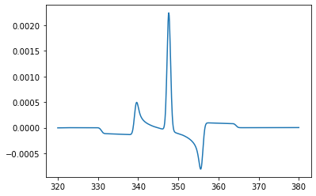
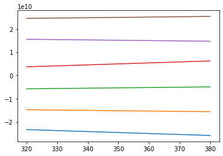
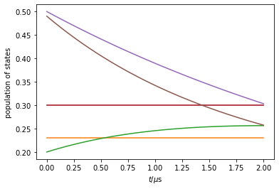
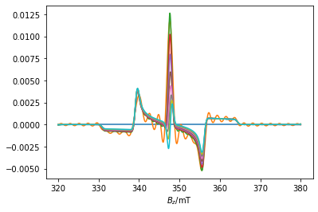
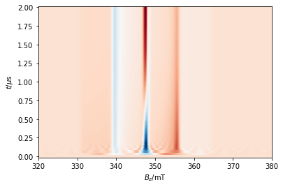

Tutorial
This tutorial will teach you the basics to write your first scripts. It does show you
How to set up a simple spin system
How to use the classes provided by teacups
How to start a teacups simulation
Where to find the outputs
A possible workflow for determining a plausible relaxation mechanism
It doesn’t show you how to
program using Python3 (here are Python3 tutorials)
use all features of the routine. See the sections about the Spinsystem, Experimental and Simulationoptions for further information about possible attributes.
The main simulation function
The simulation is done by the main simulation function. You can use the function by importing the simulations module from the teacups package:
import teacups.simulations as sim
Then it can be called in your script:
spec = teacups(Sys, Exp, SimOpt)
Input classes provided by teacups
As you can see above the main simulation function needs three classes as input. In your script theses classes need to be set up. Their attributes define the spin system parameters (Sys), the experimental parameters (Exp) and the simulation options (SimOpt). You can import the classes form the classes module by:
import teacups.classes as cl
Sys = cl.Sys()
Exp = cl.Exp()
SimOpt = cl.SimOpt()
Some important parameters are predefined but can be easily changed by setting the attribute in your skript. You can look at all attributes by typing:
vars(Sys)
vars(Exp)
vars(SimOpt)
To get a full overview of all possible attributes please consult the specific section in the documentation.
A first simulation
Define necessary inputs
After importing the classes and simulation modules and setting up the (nearly) empty classes you can fill your skript with live by defining the necessary inputs. The default syntax is:
Class.Attribute = Value
In the following some important attributes are listed. They are either obligatory (o) or it is at least recommended (r) to set a good value. The explanation for the attributes and possible values can be found in the specific section of the documentation or you can consult the quick reference.
Sys.spin_system (o)
Sys.precursor (o)
Sys.population (o)
Sys.width_gauss (r)
Sys.”spin system parameters” (o)
Exp.B_z (r)
Exp.t_scale (r)
Exp.t_points (r)
SimOpt.grid_points (r)
Using these parameters it is possible to run a simulation, nevertheless you should definitly make yourself familiar with further details to get the right things calculated.
Getting the outputs
You can now end your skript by running the simulation. Dependent on the input four different outputs can be expected:
If you set
SimOpt.eigval_mode = Truethe eigenvalues dependent on the magnetic field are given back in a numpy array →eigvals = teacups(Sys, Exp, SimOpt)If you you run any simulation in hilbert or liouville space a two-dimensional numpy array with the intensities dependent on the magnetic field an the time is returned. →
spc = teacups(Sys, Exp, SimOpt)If you run a simulation in liouville space (
SimOpt.space = 'liouville') and setSimOpt.pop_evolution = Truethe spectrum is returned as well as the evolution of the population of all eigenstates dependent on the time (as a numpy array). →spc, pop_evolution = teacups(Sys, Exp, SimOpt)If you set the optional argument
developer=Truea whole object is returned, which contains many results from inbetween the calculation (for more details see the developer section of this documentation). →cal = teacups(Sys, Exp, SimOpt, developer=True)
Example Skripts
In the following four example scripts for each spin system are provided. These can be used as a starting point for your own simulations.
Doublet
import teacups.simulations as sim
import numpy as np
import matplotlib.pyplot as plt
import teacups.classes as cl
# initialize classes with default parameters
Sys = cl.Sys()
Exp = cl.Exp()
SimOpt = cl.SimOpt()
# set up spin System parameters
Sys.g = [2, 2, 2]
Sys.width_gauss = 3
Sys.A1 = [150, 150, 300]
Sys.I1 = 1
Sys.n1 = 1
Sys.A1_frame = [0, 1, 0]
# alternative hyperfine input
# Sys.A = [[[250, 250, 250], [250, 250, 250]]]
# Sys.I = [[1/2, 1/2]]
Sys.spin_system = 'doub'
Sys.precursor = 'basis'
Sys.population = [0, 1]
# set up Experimental parameters
Exp.B_z = np.linspace(320, 380, 600)
Exp.t_scale = [0, 2e-6]
Exp.t_points = 2
# set up simulation SimOption parameters
SimOpt.grid_points = 15
# do simulation
spec = sim.teacups(Sys, Exp, SimOpt)
# plot result
plt.figure()
plt.plot(Exp.B_z, spec[1].real)
plt.show()
# SimOptional: save parameters as dictionaries
Sys_dict = vars(Sys)
Exp_dict = vars(Exp)
SimOpt_dict = vars(SimOpt)
Triplet
import teacups.simulations as sim
import teacups.classes as cl
import numpy as np
import matplotlib.pyplot as plt
# initialize classes with default parameters
Sys = cl.Sys()
Exp = cl.Exp()
SimOpt = cl.SimOpt()
# set up spin System parameters
Sys.g_tri = [2, 2, 2]
Sys.D_tri = 700
Sys.E_tri = -200
Sys.spin_system = 'trip'
Sys.precursor = 'zf'
Sys.population = [0, 0, 1]
Sys.decay = 1e-6
Sys.width_gauss = 3.5
# set up Experimental parameters
Exp.B_z = np.linspace(300, 400, 1000)
Exp.t_scale = [0, 2e-6]
Exp.t_points = 150
# set up simulation SimOption parameters
SimOpt.grid_points = 15
SimOpt.space = 'hilbert'
# do simulation
spec = sim.teacups(Sys, Exp, SimOpt)
# plot result
plt.figure()
plt.plot(Exp.B_z, spec[25].real)
plt.figure()
ax = plt.axes()
plt.xlabel("$B_z / \mathrm{mT}$")
plt.ylabel("$t / \mu\mathrm{s}$")
x, y = np.meshgrid(Exp.B_z, np.linspace(
Exp.t_scale[0], Exp.t_scale[1], Exp.t_points))
ax.pcolormesh(x, y, spec.real, cmap="RdBu", shading="auto")
plt.show()
# SimOptional: save parameters as dictionaries
Sys_dict = vars(Sys)
Exp_dict = vars(Exp)
SimOpt_dict = vars(SimOpt)
Radical pair
import teacups.simulations as sim
import teacups.classes as cl
import numpy as np
import matplotlib.pyplot as plt
Sys = cl.Sys()
Exp = cl.Exp()
SimOpt = cl.SimOpt()
Sys.spin_system = 'rp'
Sys.g1 = [2.00431, 2.00360, 2.00217]
Sys.g2 = [2.00370, 2.00285, 2.00246]
Sys.g2_frame = [2.21656815, 1.34390352, 4.31096325]
Sys.precursor = 'singlet'
# Triplet precursor
# Sys.precursor = 'triplet-zf'
# Sys.g_tri = [2.00370, 2.00285, 2.00246]
# Sys.population = [0.67, 0.33, 0]
# Sys.D_tri = -1.9217e+03
# Sys.E_tri = +525.4678
Sys.decay = 1e-6
Sys.D = -10.0890
Sys.D_frame = [0, 1.9198621771937625, 1.9198621771937625]
Sys.J_ex = 2.0458
Sys.width_gauss = 0.1
Exp.B_z = np.linspace(344, 347, 500)
Exp.t_scale = [0, 2e-6]
Exp.t_points = 60
Exp.B_mw = 0.001
Exp.freq_mw = 9.68*1e9
SimOpt.grid_points = 20
SimOpt.space = 'hilbert'
# do the simulation
spec = sim.teacups(Sys, Exp, SimOpt)
# %% Plot 2D
plt.figure()
plt.plot(Exp.B_z, spec[10].real/max(abs(spec[10].real)))
# %% Plot 3D
plt.figure()
ax = plt.axes(projection='3d')
x, y = np.meshgrid(Exp.B_z, np.linspace(0, 2e-6, Exp.t_points))
ax.plot_surface(x, y, spec.real, cmap='coolwarm')
# %% Plot surface
fig, ax = plt.subplots()
ax.pcolormesh(x, y, spec.real, cmap='coolwarm', linewidth=0, antialiased=False)
plt.xlabel('$B_z$ / mT')
plt.ylabel('$t$ / s')
plt.show()
Triplet doublet pair
import teacups.simulations as sim
import teacups.classes as cl
import numpy as np
import matplotlib.pyplot as plt
Sys = cl.Sys()
Exp = cl.Exp()
SimOpt = cl.SimOpt()
# choose a triplet doublet pair spin system
Sys.spin_system = "tdp"
# set up g-tensors of the radical and the triplet
Sys.g = [2.0059, 2.0059, 2.0059]
Sys.g_tri = [2.003, 2.003, 2.003]
# define triplet ZFS
Sys.D_tri = 700
# define couplings of the radical and the triplet
Sys.J_ex = -200000
# define initial state
Sys.precursor = "triplet-zf"
Sys.population = [0.205, 0.2, 0.3, 0.2, 0.1]
# define relaxation times and gaussian line width
Sys.T_relax_1 = 1e-6
Sys.T_relax_2 = 1e-7
Sys.width_gauss = 1
# experimental setup
Exp.B_z = np.linspace(320, 380, 700)
Exp.t_scale = [0, 2e-6]
Exp.t_points = 50
Exp.B_mw = 0.001
Exp.freq_mw = 9.75e9
# simulation options
SimOpt.grid_points = 5
SimOpt.space = "liouville"
# do the simulation
spec = sim.teacups(Sys, Exp, SimOpt)
# %% Plot 2D
plt.figure()
plt.plot(Exp.B_z, spec[10].real/max(abs(spec[10].real)))
# %% Plot 3D
plt.figure()
ax = plt.axes(projection='3d')
x, y = np.meshgrid(Exp.B_z, np.linspace(0, 2e-6, Exp.t_points))
ax.plot_surface(x, y, spec.real, cmap='coolwarm')
# %% Plot surface
fig, ax = plt.subplots()
ax.pcolormesh(x, y, spec.real, cmap='coolwarm', linewidth=0, antialiased=False)
plt.xlabel('$B_z$ / mT')
plt.ylabel('$t$ / s')
plt.show()
Workflow using Teacups
When running a simulation in order to calculate a timeresolved spectrum you should first think about what you excactly want to simulate. Think about possible relaxation models and try to determine all parameters of the spin system before starting the simulation as the calculation may be very expensive. In the following a potential workflow is described and illustrated with code snippets how you could run a TEACUPS simulation form the start.
Determine the spin system
First you have to determine the spin system for your transient simulation. Therefore a static spectrum of the spin system can be calculated. You may use some other programms like e.g. EasySpin to simulate any spin system more quickly. To simulate a (nearly) static spectrum in TEACUPS choose as SimOpt.space = 'hilbert'. Further you can calculate only two time points by setting Exp.t_points = 2. If you look at the second time trace you can see your initial static spectrum. Choose carefully the precursor state by setting Sys.precursor:
- zf:
only for triplet, population of the zero-field levels X, Y and Z
- eigen:
population of the eigenstates of the system
- singlet:
only for a radical pair, only the singlet state gets populated
- triplet-zf:
for radical pairs or triplet-doublet pairs, population of the triplet precursors zf-levels
- triplet-eigen:
for radical pairs or triplet-doublet pairs, population of the triplet precursors eigen states
- coupled:
only for triplet-doublet pairs, population of the quartet and doublet levels
- basis:
population of the levels that build the basis of the hamiltonian
As an example in the following file the calculation of a static spectrum of a triplet doublet pair with the initial population of the eigenvalues is shown:
1 2 3 4 5 6 7 8 9 10 11 12 13 14 15 16 17 18 19 20 21 22 23 24 25 26 27 28 29 30 31 32 33 34 35 36 37 38 39 40 41 42 43 44 | import teacups.simulations as sim import teacups.classes as cl import numpy as np import matplotlib.pyplot as plt Sys = cl.Sys() Exp = cl.Exp() SimOpt = cl.SimOpt() # choose a triplet doublet pair spin system Sys.spin_system = "tdp" # set up g-tensors of the radical and the triplet Sys.g = [2.0059, 2.0059, 2.0059] Sys.g_tri = [2.003, 2.003, 2.003] # define triplet ZFS Sys.D_tri = 700 # define couplings of the radical and the triplet Sys.J_ex = -20000 # define initial state Sys.precursor = "eigen" Sys.population = [0.3, 0.23, 0.2, 0.3, 0.5, 0.49] # define decay time and line width Sys.decay = 1e-6 Sys.width_gauss = 1 # experimental setup Exp.B_z = np.linspace(320, 380, 700) Exp.t_scale = [0, 2e-6] Exp.t_points = 2 Exp.B_mw = 0.001 Exp.freq_mw = 9.75e9 # simulation options SimOpt.grid_points = 7 SimOpt.space = "hilbert" # do the simulation spec = sim.teacups(Sys, Exp, SimOpt) plt.plot(Exp.B_z, spec.real[1]) |
{kind=link}

Analyze the eigenvalues
If you are happy with the initial spin system you should have a look at the eigenvalues of the system. Therefore you have to set SimOpt.eigval_mode = True. If you add the following lines to the code above you’ll get the eigenvalues in ascending order dependent on the magnetic field.
1 2 3 4 | SimOpt.eigval_mode = True eigvals = sim.teacups(Sys, Exp, SimOpt) plt.figure() plt.plot(Exp.B_z, eigvals[:, 0]) |
{kind=link}

Now it is possible to analyze the eigenstates and think about a suitable relaxation mechanism.
Calculate the time evolution
To calculate a certain timeevolution you can define Sys.dynamics as a relaxation matrix containing rate constants in 1/s. For example, if you want the eigenstate 5 to decay with the rate constant k_d, set Sys.dynamics[5, 5] = -k_d. For transitions between the eigenstates you can use the off-diagonal elements. E.g. the transition between eigenstates 5 and 2 is described by the elements [5, 2] and [2, 5].
After setting up the relaxation operator, you have to change the simulation options. Set SimOpt.eigval_mode = False in order to calculate a spectrum instead of eigenvalues. Further SimOpt.space = "liouville" activates the calculation of the time evolution in liouville space. If you set SimOpt.pop_evolution = True the matrix Exp.pop_evolution will be calculated additionally, which contains the population of each eigenstate dependent on the time. This is a good poissbility to check your relaxation model and to compare the dependence of the spectrum on the populations.
As an example you cann add the following lines to your code to get an example of a timeresolved spectrum:
1 2 3 4 5 6 7 8 9 10 11 12 13 14 15 16 17 18 19 20 21 22 23 24 25 26 27 28 29 30 31 32 33 34 35 36 37 38 39 40 41 42 43 44 45 | # Define relaxation operator for RQM, Rateconstants in 1/s k_d = 0.25 / 1e-6 R = np.zeros((6, 6)) R[5, 5] = -k_d R[4, 4] = -k_d R[5, 2] = k_d R[2, 5] = k_d Sys.dynamics = R # Change simulationoptions SimOpt.eigval_mode = False SimOpt.space = "liouville" SimOpt.pop_evolution = True Exp.t_points = 60 # Run the simulation spec, pop_evolution = sim.teacups(Sys, Exp, SimOpt) t = np.linspace(Exp.t_scale[0], Exp.t_scale[1], Exp.t_points)*1e6 # %% Plot population evolution plt.figure() plt.xlabel("$t / \mu\mathrm{s}$") plt.ylabel("population of states") plt.plot(t, np.array(pop_evolution).real) # %% Plot single 2D plt.figure() plt.xlabel("$B_z / \mathrm{mT}$") plt.plot(Exp.B_z, spec[30].real) # %% Plot multiple 2D plt.figure() plt.xlabel("$B_z / \mathrm{mT}$") for i in range(0, 29, 3): plt.plot(Exp.B_z, spec[i].real) # %% Plot surface plt.figure() ax = plt.axes() plt.xlabel("$B_z / \mathrm{mT}$") plt.ylabel("$t / \mu\mathrm{s}$") x, y = np.meshgrid(Exp.B_z, t) ax.pcolormesh(x, y, spec.real, cmap="RdBu", shading="auto") |
{kind=link}

{kind=link}

{kind=link}
